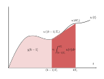
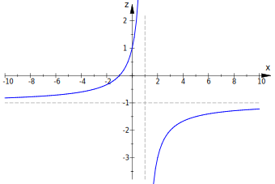

The bilinear transform is a transformation from continuous-time systems (in the Laplace domain) to discrete-time systems (in the Z-domain). It uses the trapezoidal rule for numerical integration.
Consider a continuous-time integrator \(y(t) = \int_0^tu(\tau)d\tau\). (Where \(y(t)\) is the output of the
integrator for input \(u(t)\)).
In the Laplace domain, we can represent these signals as follows:
$$ U(s) \triangleq \mathcal{L}\left\{u(t)\right\} $$
$$ Y(s) \triangleq \mathcal{L}\left\{y(t)\right\} = \mathcal{L}\left\{\int_0^tu(\tau)d\tau\right\} = \frac{1}{s}
U(s) $$
Therefore, the transfer function of an integrator is:
$$ \begin{equation}
H_a(s) \triangleq \frac{Y(s)}{U(s)} = \frac{1}{s} \frac{U(s)}{U(s)} = \frac{1}{s}
\end{equation} $$
If we evaluate \(y(t)\) at a specific time \(t = kT_s\), \(y(t)\) can be written as follows:
$$ y[k] \triangleq y(kT_s) = \int_0^{kT_s}u(\tau) d\tau $$
By splitting up the integral:
$$ y[k] = \int_0^{(k-1)T_s}u(\tau)d\tau + \int_{(k-1)T_s}^{kT_s}u(\tau)d\tau $$
This results in a recursive formula for \(y[k]\):
$$ \begin{equation}
y[k] = y[k-1] + \int_{(k-1)T_s}^{kT_s}u(\tau)d\tau
\end{equation} $$
The second term expresses the area under the curve of \(u(t)\) between \(t=(k-1)T_s\) and \(t=kT_s\). It can be
approximated in several different ways, using numerical integration techniques. In the case of the bilinear
transform, the trapezoidal rule is used, with a step size (sample time) of \(T_s\).
This is demonstrated in the following figure.

The light red area on the left is the first term in Equation \((2)\), and the darker red trapezoid on the right
approximates the second term of the equation.
The area of this trapezoid is given by:
$$ A = T_s \frac{u((k-1)T_s) + u(kT_s)}{2} = \frac{T_s}{2} \left(u[k-1]+u[k]\right) $$
$$ u[k] \triangleq u(kT_s) $$
Therefore, we can approximate Equation \((2)\):
$$ \begin{equation}
y[k] \approx y[k-1] + \frac{T_s}{2}\left(u[k-1]+u[k]\right)
\end{equation} $$
We now have an approximation of the recurrence relation for the integrator.
In Equation \((1)\), we found that the transfer function of an integrator in the Laplace domain was \(H_a(s) = \frac{1}{s}\). We can now apply the Z-transform to the recurrence relation in Equation \((3)\) to relate the Laplace domain to the Z-domain. $$ \begin{split} &\mathcal{Z}\left\{y[k] \approx y[k-1] + \frac{T_s}{2}\left(u[k-1]+u[k]\right)\right\} \\ \Leftrightarrow \quad & Y(z) \approx z^{-1} Y(z) + \frac{T_s}{2}\left( z^{-1} U(z) + U(z) \right) \\ \Leftrightarrow \quad & \left(1 - z^{-1}\right) Y(z) \approx \frac{T_s}{2} \left(1+z^{-1}\right) U(z) \\ \end{split} $$ $$ \begin{equation} H_d(z) \triangleq \frac{Y(z)}{U(z)} \approx \frac{T_s}{2} \frac{z+1}{z-1} \end{equation} $$ If we compare the continuous-time transfer function \(H_a(s)\) from Equation \((1)\) to the approximated discrete-time transfer function \(H_d(z)\) from Equation \((4)\), we find an approximation of \(s\) in function of \(z\), that can be used to discretize a continuous-time transfer function: $$ s \leftrightarrow \frac{2}{T_s} \frac{z-1}{z+1} $$ We can also express \(z\) in function of \(s\): $$ s \leftrightarrow \frac{2}{T_s} \frac{z-1}{z+1} \\ sz + s \leftrightarrow \frac{2}{T_s} z - \frac{2}{T_s} \\ z\left(s-\frac{2}{T_s}\right) \leftrightarrow -s - \frac{2}{T_s} \\ z \leftrightarrow \frac{-s-\frac{2}{T_s}}{s-\frac{2}{T_s}} \\ z \leftrightarrow \frac{1 + \frac{T_s}{2}s}{1 - \frac{T_s}{2}s} $$
Why can this be generalized for all transfer functions? We only proved this for \(H_a(s) = 1/s\).
Alternatively, the identity \(z = e^{sT_s}\) can be used, together with the Taylor expansion of \(e^x = 1 + x + \frac{x^2}{2!} + \frac{x^3}{3!} + \dots\): $$ \begin{split} z & \;=\; e^{sT_s} \\ & \;=\; \frac{e^{sT_s/2}}{e^{-sT_s/2}} \\ & \;\approx\; \frac{1 + \frac{T_s}{2}s}{1 - \frac{T_s}{2}s} \end{split} $$
Where does the identity \(z = e^{sT_s}\) come from?
In the Laplace domain, poles that lie to the right of the imaginary axis are unstable. In the Z-domain, poles that
lie outside of the unit circle are unstable.
We wish to determine what happens to the stability of poles when applying the bilinear transform.
Let's look at the image of the imaginary axis \(\left(s = j\omega\right)\):
$$ \begin{split}
z \;=\;& \frac{1 + \frac{T_s}{2}j\omega}{1 - \frac{T_s}{2}j\omega} \\
=\;& \frac{1 + \frac{T_s}{2}j\omega}{1 - \frac{T_s}{2}j\omega} \cdot \frac{1 + \frac{T_s}{2}j\omega}{1 +
\frac{T_s}{2}j\omega} \\
=\;& \frac{\left(1 + \frac{T_s}{2}j\omega\right)^2}{1 + \left(\frac{T_s}{2}\omega\right)^2} \\
=\;& \frac{1 + 2 \frac{T_s}{2}j\omega - \left(\frac{T_s}{2}\omega\right)^2}{1 +
\left(\frac{T_s}{2}\omega\right)^2} \\
\end{split} $$
$$
\begin{equation}
z \;=\; \frac{1 - \left(\frac{T_s}{2}\omega\right)^2}{1 + \left(\frac{T_s}{2}\omega\right)^2} + j\frac{2
\frac{T_s}{2}\omega}{1 + \left(\frac{T_s}{2}\omega\right)^2}
\end{equation} $$
We'll now calculate \(\left|z\right|^2\), you'll see why in a moment.
$$ \begin{split}
\left|z\right|^2 \;=\;& \Re(z)^2 + \Im(z)^2 \\
=\;& \frac{\left(1 - \left(\frac{T_s}{2}\omega\right)^2\right)^2}{\left(1 +
\left(\frac{T_s}{2}\omega\right)^2\right)^2} +
\frac{\left(2 \frac{T_s}{2}\omega\right)^2}{\left(1 + \left(\frac{T_s}{2}\omega\right)^2\right)^2} \\
=\;& \frac{1 - 2 \left(\frac{T_s}{2}\omega\right)^2 + \left(\frac{T_s}{2}\omega\right)^4 + 4
\left(\frac{T_s}{2}\omega\right)^2}{\left(1 + \left(\frac{T_s}{2}\omega\right)^2\right)^2} \\
=\;& \frac{1 + 2 \left(\frac{T_s}{2}\omega\right)^2 + \left(\frac{T_s}{2}\omega\right)^4}{\left(1 +
\left(\frac{T_s}{2}\omega\right)^2\right)^2} \\
=\;& \frac{\left(1 + \left(\frac{T_s}{2}\omega\right)^2\right)^2}{\left(1 +
\left(\frac{T_s}{2}\omega\right)^2\right)^2} \\
\left|z\right|^2 \;=\;& 1
\end{split} $$
In other words, the imaginary axis in the s-plane (Laplace domain) maps to the unit circle in the z-plane
(Z-domain).
Let's now look at the image of the real axis \(\left(s = \sigma\right)\): $$ z = \frac{1 + \frac{T_s}{2}\sigma}{1 - \frac{T_s}{2}\sigma} $$ Substituting \(x \triangleq \frac{T_s}{2}\sigma\) results in: $$ z = \frac{1 + x}{1 - x} $$ Note that \(T_s\) (the sample time) is positive by definition, so \(x\) is positive when \(\sigma\) is positive, and \(x\) is negative when \(\sigma\) is negative.  As you can see, the right half of the real axis \(\left(\sigma < 0\right)\) is mapped to the interval \(z \in (-1, 1)\), so inside the unit circle; the left half of the real axis \(\left(\sigma > 0\right)\) is mapped to the interval \(z \in (-\infty, -1) \cup (1, +\infty)\).
We can conclude that the left half of the s-plane is mapped to the part of the z-plane inside of the unit circle,
and the right half of the s-plane is mapped to the part of the z-plane outside of the unit circle.
This has a very important consequence: stable poles in the Laplace domain map to stable poles in the Z-domain, and
unstable poles in the Laplace domain map to unstable poles in the Z-domain.
In the Laplace domain, we determine the frequency response of a system by evaluating the transfer function at \(s=j\omega_a\). In the Z-domain, on the other hand, we evaluate the transfer function at \(z=e^{j\omega_d}\).
When designing a filter in the Laplace domain with a certain corner-frequency, we want the corner-frequency to be
the same after discretization.
However, we'll find that there is no linear mapping from the frequency response of the continuous-time system
to the frequency response of the discrete-time system.
How can I explain this more accurately?
In the previous section, we already found that the imaginary axis of the s-plane maps to the unit circle of the
z-plane.
The phase of any \(z\) on the unit circle in the Z-domain is the frequency \(\omega_d
\left(\left[rad/sample\right]\right)\) of a specific point in the frequency response of the discrete-time system.
The imaginary part of any \(s\) on the imaginary axis in the Laplace domain is the frequency \(\omega_a
\left(\left[rad/s\right]\right)\) of a specific point in the frequency response of the continuous-time system.
$$ \omega_d \triangleq \angle z = \arctan\left(\frac{\Im(z)}{\Re(z)}\right) $$
We'll be using Equation \((5)\), substituting \(\alpha \triangleq \frac{T_s}{2}\) to make it easier to read.
$$ \begin{split}
& \quad \omega_d = \arctan\left(\frac{2\alpha\omega_a}{1-\alpha^2\omega_a^2}\right) \\
\Leftrightarrow & \quad \tan\left(\omega_d\right) = \frac{2\alpha\omega_a}{1-\alpha^2\omega_a^2} \\
\Leftrightarrow & \quad \left(1-\alpha^2\omega_a^2\right) \tan\left(\omega_d\right) = 2\alpha\omega_a \\
\Leftrightarrow & \quad \alpha^2\tan\left(\omega_d\right)\omega_a^2 + 2\alpha\omega_a -
\tan\left(\omega_d\right) = 0 \\
\end{split} $$
We can solve this quadratic polynomial in \(\omega_a\) using the discriminant method:
$$ \begin{split}
\Delta & \;=\; 4\alpha^2 + 4\alpha^2\tan^2\omega_d \\
& \;=\; 4\alpha^2\left(1 + tan^2\omega_d\right) \\
& \;=\; 4\alpha^2 sec^2\omega_d
\end{split} $$
$$ \begin{split}
\omega_a & \;=\; \frac{-2\alpha \pm \sqrt{\Delta}}{2\alpha^2\tan\omega_d} \\
& \;=\; \frac{-2\alpha \pm 2\alpha\sec\omega_d}{2\alpha^2\tan\omega_d} \\
& \;=\; \frac{-1}{\alpha} \cdot \frac{1 \mp \sec\omega_d}{\tan\omega_d} \\
& \;=\; \frac{-1}{\alpha} \cdot \frac{\cos\omega_d \mp 1}{\sin\omega_d} \\
& \;=\; \frac{-1}{\alpha} \cdot \frac{2\cos^2\frac{\omega_d}{2} - 1 \mp
1}{2\sin\frac{\omega_d}{2}\cos\frac{\omega_d}{2}} \\
\omega_{a,1} & \;=\; \frac{-1}{\alpha} \cdot \frac{2\cos^2\frac{\omega_d}{2} -
2}{2\sin\frac{\omega_d}{2}\cos\frac{\omega_d}{2}} \\
& \;=\; \frac{-1}{\alpha} \cdot \frac{2\left(\cos^2\frac{\omega_d}{2} -
1\right)}{2\sin\frac{\omega_d}{2}\cos\frac{\omega_d}{2}} \\
& \;=\; \frac{1}{\alpha} \cdot \frac{\sin^2\frac{\omega_d}{2}}{\sin\frac{\omega_d}{2}\cos\frac{\omega_d}{2}} \\
& \;=\; \frac{1}{\alpha} \cdot \frac{\sin\frac{\omega_d}{2}}{\cos\frac{\omega_d}{2}} \\
& \;=\; \frac{1}{\alpha} \tan\frac{\omega_d}{2} \\
& \;=\; \frac{2}{T_s} \tan\frac{\omega_d}{2} \\
\omega_{a,2} & \;=\; \frac{-1}{\alpha} \cdot
\frac{2\cos^2\frac{\omega_d}{2}}{2\sin\frac{\omega_d}{2}\cos\frac{\omega_d}{2}} \\
& \;=\; \frac{-1}{\alpha} \cdot \frac{\cos\frac{\omega_d}{2}}{\sin\frac{\omega_d}{2}} \\
& \;=\; \frac{-1}{\alpha} \cot\frac{\omega_d}{2} \\
& \;=\; \frac{-2}{T_s} \cot\frac{\omega_d}{2} \\
\end{split} $$
I used some trigonometric double-angle identities to simplify the result.
We get two possible solutions for \(\omega_a\), however, only one is correct.
First, let's look at the case where \(\omega_a\geq 0\): in that case, \(\Im(z)\) is always positive (see Equation
\((5)\)),
so \(\omega_d \triangleq \angle z \in [0, \pi]\).
The first solution \(\omega_{a,1} = \frac{2}{T_s} \tan\frac{\omega_d}{2}\) is positive, because the tangent
function is positive for the argument \(\frac{\omega_d}{2} \in [0, \pi/2]\).
The second solution \(\omega_{a,2} = \frac{-2}{T_s} \cot\frac{\omega_d}{2}\) is negative, because the cotangent
function is positive for the argument \(\frac{\omega_d}{2} \in [0, \pi/2]\). This is in contradiction to our
initial assumption that \(\omega_a\geq 0\).
Now consider the case where \(\omega_a\leq 0\): in that case, \(\Im(z)\) is always negative,
so \(\omega_d \triangleq \angle z \in [0, -\pi]\).
The first solution \(\omega_{a,1} = \frac{2}{T_s} \tan\frac{\omega_d}{2}\) is negative, because the tangent
function is negative for the argument \(\frac{\omega_d}{2} \in [0, -\pi/2]\).
The second solution \(\omega_{a,2} = \frac{-2}{T_s} \cot\frac{\omega_d}{2}\) is positive, because the cotangent
function is negative for the argument \(\frac{\omega_d}{2} \in [0, -\pi/2]\). This is in contradiction to our
initial assumption that \(\omega_a\leq 0\).
In conclusion, if we want our digital system to have a specific characteristic at a given frequency \(\omega_d\), we have to use a different frequency \(\omega_a\) when designing the system in the analog domain. This action is called frequency prewarping. The prewarped frequency is given by: $$ \begin{equation} \omega_a = \frac{2}{T_s} \tan\frac{\omega_d}{2} \end{equation} $$ Where \(\omega_d\) is the normalized angular frequency in radians per sample. The actual frequency \(f_d\) is given by: $$ f_d = \frac{\omega_d}{2\pi T_s} $$ Note the units of the quantities involved: \(\omega_d\) is given in \(rad/sample\), dividing by \(2\pi\) cancels out the radians. The unit of \(T_s\) is \(s/sample\), the samples cancel out, and the result \(f_d\) is given in \(Hz\) or \(s^{-1}\).